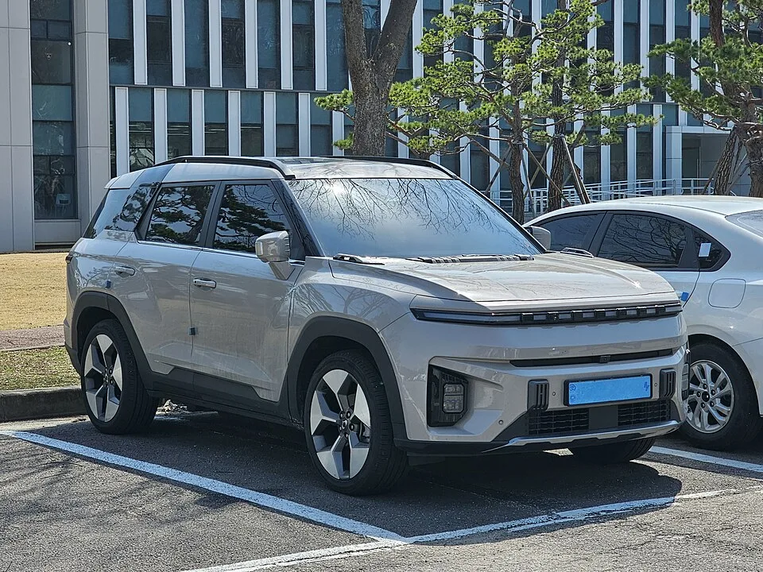
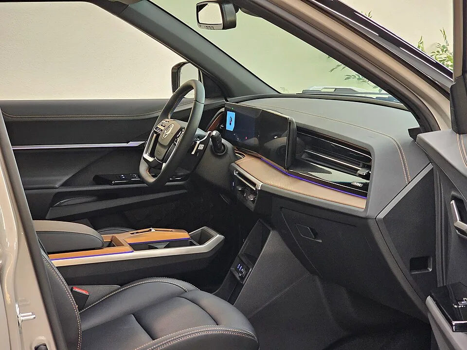

▲ KGM 익스피리언스 센터 일산에 전시된 토레스 EVX. 범퍼 하단에 'TORRES evx' 레터링이 보인다 ⓒ Wikimedia Commons
전기 SUV인데, 보조금을 더하면 같은 체급 내연기관 SUV보다 싸질 수 있다.
KGM 토레스 EVX 얘기다. 동급 유일의 LFP(리튬인산철) 배터리를 얹어 가격을 끌어내렸고, 여기에 국고·지자체 보조금과 제조사 추가 지원까지 겹치면 실구매가가 3천만원대 초중반까지 내려간다. 다만 공짜는 없다. 배터리를 바꾼 대가로 완속충전 속도와 저온 주행거리는 눈에 띄게 손해를 본다.
2027년형 가격표부터 실제 3개월 사용자의 후기까지, 취합 가능한 정보를 모아 토레스 EVX를 심층적으로 뜯어봤다.
1. 가격표 — 2027년형은 얼마나 올랐나
토레스 EVX는 2026년 5월 20일 2027년형으로 연식변경됐다. 시작 가격이 2026년형 대비 32만원 오르며 소폭 상승했지만, 여전히 4천만원대 초반부터 시작하는 가격표를 유지하고 있다.
| 트림 | 차종 | 가격 |
|---|---|---|
| E5 | 승용(5인승) | 4,554만원 |
| E7 | 승용(7인승) | 4,753만원 |
| TV5 | 밴 | 4,470만원 |
| TV7 | 밴 | 4,656만원 |
세제혜택 미적용 기준으로는 E5가 4,797만원, E7이 5,006만원까지 올라간다. 다만 전기차는 개별소비세·취득세 감면이 대부분 적용되므로, 실질적으로 소비자가 마주하는 가격은 위 표에 가깝다.

▲ 전면 그릴 대신 발광 라인을 두른 클로저 패널이 전기차 전용 디자인임을 드러낸다 ⓒ Wikimedia Commons
2. 배터리와 주행거리 — 왜 LFP를 택했나
토레스 EVX의 핵심은 배터리다. 국내 완성차 중 유일하게 중국 BYD의 LFP 블레이드 배터리를 탑재했다. NCM(니켈·코발트·망간) 배터리 대비 에너지 밀도는 낮지만, 원가가 저렴하고 화재 안전성이 높다는 장점이 있다.
| 항목 | 내용 |
|---|---|
| 배터리 | LFP(리튬인산철), 73.4kWh / 80.6kWh 2종 |
| 1회 충전 주행거리 | 최대 452km(20인치 상온 기준) · 18인치 저온 333km |
| 모터 출력 | 152.2kW(약 207마력) |
| 최대토크 | 34.6kg·m |
| 구동방식 | 2WD / AWD(트림별 상이) |
📍 LFP 배터리의 트레이드오프
LFP는 에너지 밀도가 낮아 같은 용량이라도 부피와 무게가 커지고, 저온 환경에서 효율이 더 크게 떨어진다. 실사용 후기에서도 영하권 날씨에서 주행 가능 거리가 20~30% 줄어든다는 보고가 반복된다. 대신 배터리 전압 특성상 100% 완충을 자주 해도 수명에 큰 무리가 없어, 매일 완충해 타는 데일리카로는 오히려 유리하다는 평가가 많다.
3. 충전 — 급속은 무난, 완속은 느리다
완속충전이 토레스 EVX의 가장 자주 지적되는 약점이다. LFP 배터리 특유의 저온·저속 충전 특성 때문에, 완속(7kW 이하 AC) 충전 시 다른 국산 전기차 대비 충전 완료까지 걸리는 시간이 길다는 평가가 여러 시승기와 실사용 후기에서 공통적으로 나온다.
✅ 충전 전 확인할 것
· 아파트 완속충전기를 주로 이용한다면 완충까지의 소요 시간을 미리 감안할 것
· 급속충전은 상대적으로 무난하다는 평가가 많아, 장거리 이동 전 급속충전소를 활용하는 편이 효율적
· 겨울철에는 완충해도 표시 주행거리가 실제보다 짧게 느껴질 수 있음을 감안해 여유 있게 충전할 것
4. 실구매가 — 보조금을 더하면 얼마까지 내려가나
KGM은 토레스 EVX 구매 고객에게 제조사 차원의 추가 지원금 75만원을 지급하고 있다. 여기에 정부의 국고 보조금과 지방자치단체 보조금을 더하면 실제 지불 금액은 크게 낮아진다.
| 구분 | 차량가 | 제조사 지원 | 국고 보조금 | 지자체 보조금 | 실구매가 |
|---|---|---|---|---|---|
| E5(승용) | 4,550만원 | -75만원 | -367만원 | -141만원 | 약 3,967만원 |
| TV5(밴) | 4,438만원 | -75만원 | -352만원 | -107만원 | 약 3,904만원 |
국고·지자체 보조금은 지역과 시점에 따라 달라지므로, 실제 구매 전에는 거주지 기준 보조금을 반드시 따로 확인해야 한다. 무공해차 통합누리집에서 지역별 보조금과 잔여 물량을 조회할 수 있다. 무공해차 통합누리집 바로가기
📍 택시·영업용은 혜택이 더 크다
토레스 EVX 택시 전용 모델은 150만원, 자매 모델인 코란도 EV 택시는 100만원의 추가 혜택을 받는다. 화물차로 등록되는 밴(TV5·TV7) 트림 역시 일반 승용 대비 세제 구조가 달라 실구매가가 낮게 형성된다.
5. 3개월 실사용 후기 — 유지비와 공간활용
온라인 커뮤니티에 올라온 3개월·5,000km 실사용 후기를 종합하면, 유지비 절감 체감도가 가장 크게 언급된다. 내연기관 대비 월 유지비가 70% 이상 절감됐다는 후기가 있으며, 별도 옵션을 추가하지 않아도 기본 구성만으로 부족함이 없다는 평가도 나온다.
| 장점 | 단점 |
|---|---|
| 내연기관 대비 월 유지비 70%↓ 체감 | 완속충전 속도가 느림 |
| 기본 구성만으로 옵션 추가 불필요 | 영하권 주행거리 20~30% 감소 |
| 넉넉한 2열·적재 공간, 패밀리카로 적합 | 고속 주행 시 풍절음 발생 |
| 배터리로 에어컨 가동 가능, 정차 중 무시동 냉방 | 인포테인먼트 소프트웨어 개선 여지 |

▲ 듀얼 와이드 스크린과 우드톤 대시보드를 적용한 실내. 무선충전 패드와 수납공간도 넉넉하다 ⓒ Wikimedia Commons
실제 주행 전비는 5.3~5.5km/kWh 수준으로 보고되며, 이 수치는 운전 습관에 따라 표시 주행가능거리가 더 늘어날 여지가 있다는 뜻이기도 하다.
6. 시장에서의 위치 — 3천만원대 전기 SUV의 대안
토레스 EVX가 파고드는 지점은 명확하다. 기아 EV5, 현대 코나 일렉트릭 등 경쟁 모델과 비교했을 때 보조금을 더한 실구매가 기준으로 가장 저렴한 축에 속하면서도, 준중형~중형급 SUV의 넉넉한 실내 공간을 확보했다.

▲ 후면 범퍼에 새겨진 'TORRES EVX' 레터링. 내연기관 토레스와 차별화된 전기차 전용 디자인 요소다 ⓒ Wikimedia Commons
📍 신흥시장에서도 활용되는 모델
KGM은 미얀마 최대 민간 자동차 그룹 SSS와 손잡고 토레스 EVX와 무쏘 EV를 신흥시장 공략의 첨병으로 투입했다. 내수에서 검증된 가격 경쟁력을 해외에서도 무기로 삼는 전략이다.
다만 완속충전 속도와 저온 주행거리라는 약점은, 아파트 등 완속충전 위주 환경에 거주하거나 겨울철 장거리 운행이 잦은 소비자에게는 구매 전 반드시 감안해야 할 요소다.
7. 요약
KGM 토레스 EVX는 동급 유일의 LFP 배터리로 가격 경쟁력을 만든 전기 SUV다. 2027년형 가격은 세제혜택 후 4,554만원(E5)부터 시작하지만, 제조사 추가지원 75만원에 국고·지자체 보조금을 더하면 실구매가가 3,900만원대까지 내려간다.
트레이드오프도 분명하다. 완속충전 속도가 느리고, 영하권 날씨에서는 주행거리가 20~30% 줄어든다. 반면 100% 완충 부담이 적어 데일리카로 안정적이고, 3개월 실사용 후기에서는 유지비 절감과 넉넉한 공간활용성이 공통적으로 언급된다.
완속충전 위주 환경이거나 혹한기 장거리 운행이 잦다면 이 점을 감안해야 하지만, 보조금을 최대한 활용할 수 있는 조건이라면 3천만원대 전기 SUV라는 가격표 자체가 강력한 무기가 된다.